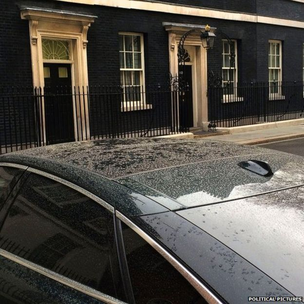

2 April 2014 Last updated at 15:23
Pollution to spread across England
Forecasts that air pollution will reach high levels in parts of England. Defra issued warnings as high pollution levels were recorded on Tuesday.
Why are polution levels so high?
Sahara dust causes sore throats and dirty carsHow Saharan dust reached the UK
What will pollution do to us?
Air pollution 'serious issue'